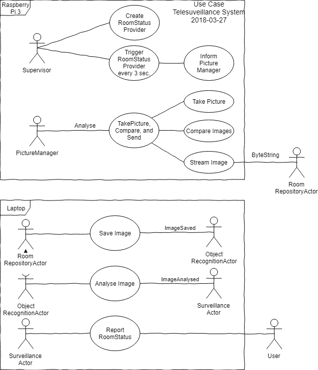

Telesurveillance project
Objective
The objective of this project is to expand my Scala knowledge, which I gained through the projects 'surveillance' and 'web project (Play)'. In this project I use Akka Actor, Akka Remote and Cluster. The software will be distributed over a laptop and several Raspberry Pi's.Planning from the learning point of view:
- Modify Domain Driven Design code 'surveillance' to Actors (Done).
- Set up the complete Actor System (Done).
- Working with 'real' images (Done).
- Setting up a cluster of Raspberry Pi's (Backlog).
- Working with Slack (Doing).
- Implementing Machine Learning with Scala/Spark (Backlog).
Result
With this project, I have been able to deepen my knowledge considerably. I also got some valuable advice from Mariano Navas. Meanwhile, I am beginning to feel comfortable with Scala/Akka and would qualify myself as follows:
- Domain Driven Design (ports and adapters/onion pattern) - Good.
- Scala - Good.
- Functional programming - Good.
- Akka Actor design - Good.
- Akka Remoting - Good.
- Akka Cluster - Reasonably well.
- Actor Unit testing - Further research.
- Akka Streams - Reasonably well.
- Machine Learning Python 3 - Reasonably well.
- Machine Learning Scala/Spark - Further research.
- Docker on Raspberry Pi 3 - Good.
UML Diagrams
Application
